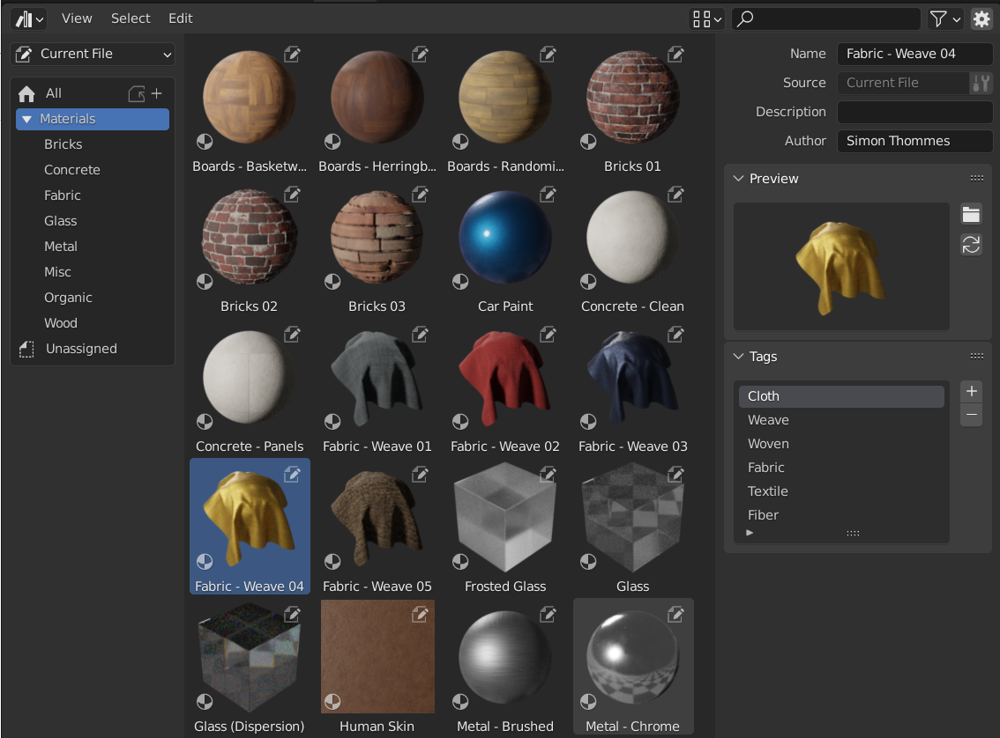
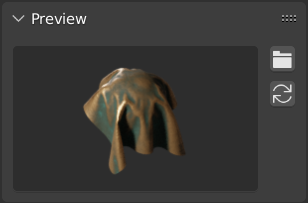

Asset Browser¶
Asset Browser là giao diện chính để tổ chức và sử dụng asset. Để truy cập, hãy tạo một area mới, nhấp vào nút Editor Type ở góc trên bên trái của vùng này và chọn Asset Browser.
Xem thêm
- Thư viện Asset
Thông tin chung về hệ thống asset library của Blender, bao gồm cách tạo và chỉnh sửa asset, cùng các quyết định thiết kế.
- Asset Catalog
Để tổ chức asset.
- Pose Library
Được xây dựng dựa trên Asset Browser.
Interface¶

Asset Browser, hiển thị các material trong một asset library.¶
Header¶
Cài đặt Import¶
- Import Method
Quyết định cách dữ liệu được quản lý khi một asset được import. Tùy chọn này nằm ở giữa header của Asset Browser (khi asset library được chọn khác Current File hoặc Essentials):
- Follow Asset or Preferences:
Sử dụng phương thức import đã được thiết lập trong File Path Preferences.
- Link:
Asset sẽ được link vào blend-file hiện tại và do đó ở chế độ chỉ đọc. Các thay đổi sau này trên file asset sẽ được phản ánh vào tất cả các file link tới nó.
- Append:
Asset cùng toàn bộ các phần phụ thuộc của nó sẽ được Append (sao chép) vào file hiện tại. Kéo một material vào scene ba lần sẽ tạo ra ba bản sao độc lập. Kéo một object vào scene ba lần cũng sẽ tạo ra ba bản sao độc lập.
"Phần phụ thuộc" ở đây là mọi thứ mà asset tham chiếu tới. Với một object, đó có thể là mesh và material của nó, nhưng cũng bao gồm các object khác được dùng bởi modifier, constraint hoặc driver.
Vì lúc này file đã có bản sao asset riêng của mình, các thay đổi sau này trên file asset sẽ không được phản ánh vào file đã append asset đó.
- Pack:
Import asset dưới dạng dữ liệu link và ngay lập tức pack nó vào blend-file hiện tại. Điều này đảm bảo asset vẫn khả dụng ngay cả khi dữ liệu của library gốc bị thay đổi hoặc không còn truy cập được.
Hữu ích để duy trì các file độc lập, không phụ thuộc vào đường dẫn asset library bên ngoài.
- Instance Collections -- Khi Link/Append
Mô phỏng lại tùy chọn Instance Collections khi append từ file browser
Một số loại asset như collection có thể được tạo dưới dạng instanced collection. Điều này được thực hiện bằng cách bật tùy chọn Instance sau khi kéo asset dạng collection vào 3D Viewport. Khi bật các tùy chọn này, một empty object sẽ được thêm vào và sử dụng một instance của collection. Nếu tùy chọn này bị tắt, toàn bộ hệ thống phân cấp của collection sẽ được thêm vào scene.
Asset dạng collection từ file hiện tại luôn luôn được instance.
Display Settings¶
Điều chỉnh cách asset được hiển thị trong danh sách asset.
- Display Mode
Điều khiển cách các file được hiển thị.
- Horizontal List:
Hiển thị các file và thư mục theo dạng danh sách ngang.
- Thumbnails:
Hiển thị bản xem trước.
- Preview Size Horizontal List
Thay đổi kích thước thumbnail trong các chế độ xem danh sách.
- Column Size Horizontal List
Độ rộng của cột trong các chế độ xem danh sách ngang.
- Size Thumbnails
Thay đổi kích thước của thumbnail xem trước.
- Sort By
- Name:
Sắp xếp danh sách asset theo thứ tự alphabet.
- Asset Catalog:
Sắp xếp danh sách asset sao cho các asset trong cùng một catalog nằm cạnh nhau. Trong một catalog, các asset được sắp xếp theo tên. Các catalog được xếp theo thứ tự của hệ thống phân cấp catalog đã được làm phẳng.
Filter¶
Kiểm soát những loại asset nào được hiển thị khi duyệt một asset library.
- Access
Lọc asset dựa trên việc chúng có sẵn cục bộ hay phải tải xuống từ một asset library trực tuyến.
- Online and Offline:
Hiển thị cả asset đã tải xuống lẫn asset khả dụng trực tuyến.
- Online Only:
Chỉ hiển thị những asset khả dụng trực tuyến và chưa được tải xuống.
- Offline Only:
Chỉ hiển thị những asset đã có sẵn cục bộ, từ các asset library cục bộ hoặc từ những asset trực tuyến đã tải về trước đó.
Main Region¶
Vùng ở giữa của Asset Browser liệt kê các asset có trong catalog đang được chọn.
Nhấp LMB để chọn một asset duy nhất. Giữ thêm Ctrl để thêm/bỏ asset đó vào/khỏi vùng chọn, hoặc Shift để chọn một dải asset. Bạn cũng có thể kéo LMB để thực hiện box select.
Vùng này có menu ngữ cảnh với các thao tác sau:
Vùng Asset Library¶
Vùng bên trái cho phép bạn chọn asset library và hiển thị các catalog của nó. Bạn có thể hiện/ẩn vùng này bằng cách nhấn T.
- Asset Library
Asset library mà các catalog của nó sẽ được hiển thị.
- All Libraries:
Hiển thị catalog từ tất cả các library khả dụng.
- Current File:
Hiển thị các catalog trong blend-file hiện tại (kể cả khi file đó chưa thuộc asset library nào). Xem Asset Library của File hiện tại để biết thêm thông tin.
- Essentials:
Hiển thị các catalog được đóng gói kèm theo Blender.
Những library mà bạn đã thêm trong File Path Preferences cũng được liệt kê tại đây.
- Copy Bundle to Asset Library
Chỉ hiển thị khi Asset Library được đặt thành Current File và blend-file hiện tại là một asset bundle chưa thuộc asset library nào.
Cho phép bạn chọn asset library đích, sau đó mở File Browser tại thư mục gốc của library đó để bạn lưu blend-file hiện tại vào đó. Sau khi lưu, các asset trong blend-file sẽ khả dụng như một phần của library.
- Catalogs
Tree View hiển thị các catalog của asset library đang chọn. Một catalog là một nhóm asset; khi bạn chọn một catalog, chỉ những asset trong catalog đó và các catalog con của nó mới được liệt kê.
Bạn có thể đổi tên catalog bằng cách nhấp đúp vào nó, hoặc gán nó vào một catalog cha khác bằng cách kéo và thả.
Các add-on và tính năng như Pose Library có thể hiển thị các panel tùy chỉnh tại đây.
Vùng Chi tiết Asset¶
Vùng bên phải hiển thị metadata của asset đang hoạt động. Bạn có thể hiện/ẩn vùng này bằng cách nhấn N hoặc nhấp vào biểu tượng bánh răng ở header.
Chỉ metadata của những asset nằm trong blend-file hiện tại mới có thể được chỉnh sửa.
- Name
Tên của asset. Duy nhất cho từng kiểu dữ liệu asset trong cùng một blend-file.
- Source
Đường dẫn đầy đủ của blend-file chứa asset.
- Open Blend File
Mở blend-file chứa asset trong một phiên Blender mới. Khi phiên này được đóng lại, Asset Browser sẽ tự động được làm mới.
- Giấy phép
Tên license (tùy chọn) mà asset được phân phối dưới đó. Blender không sử dụng trường này.
- Copyright
Thông báo bản quyền (tùy chọn). Blender không sử dụng trường này.
- Mô tả
Mô tả asset (tùy chọn). Blender không sử dụng trường này.
- Tác giả
Trường (tùy chọn) cho tác giả của asset. Blender không sử dụng trường này.
Preview¶
Hiển thị hình ảnh xem trước của asset. Xem Bản xem trước Asset.
- Load Custom Preview
Mở File Browser để bạn chọn một hình ảnh mới cho phần xem trước của asset.
- Generate Preview
Tự động tạo một bản xem trước mới cho asset.
- Preview
Menu chứa các thao tác bổ sung cho bản xem trước.
- Render Active Object
Tạo bản xem trước dựa trên object Active của 3D Viewport. Điều này hữu ích cho node group, vốn không thể tự động tạo bản xem trước riêng cho mình.
- Remove Preview
Xóa bản xem trước của asset.
- Capture Screenshot Preview
Kéo chọn một hình chữ nhật trên một vùng của Blender để chụp nó làm hình ảnh xem trước của asset. Xem Chụp màn hình cho bản xem trước.
Import¶
- Preferred Method
Sử dụng phương thức import ưu tiên của asset khi Follow Asset or Preferences được chọn trong Asset Browser.
Điều này cho phép asset chỉ định phương thức import phù hợp nhất với mục đích sử dụng của mình. Ví dụ, một base mesh dành cho sculpt có thể chỉ định rằng nó luôn luôn nên được append để có thể chỉnh sửa ngay sau khi import.
Sử dụng Asset¶
Như một quy tắc chung, asset được sử dụng bằng cách kéo nó từ Asset Browser đến vị trí mong muốn. Object và world có thể được kéo từ Asset Browser vào scene. Material có thể được kéo thẳng lên object sẽ sử dụng nó. Geometry nodes cũng có thể được kéo lên object để thêm một Geometry Nodes Modifier. Cách dùng asset pose thì khác, và được mô tả trong Pose Library.
Khi bạn kéo một collection, nó sẽ được thêm vào dưới dạng một instance -- tức là một object duy nhất đại diện cho toàn bộ collection, nghĩa là nội dung của nó không hiển thị trong Outliner và không thể chỉnh sửa. Bạn có thể thay đổi điều này theo các cách sau:
Dùng Make Instances Real để thay thế object bằng nội dung của collection.
Cách khác: xóa object, tìm collection trong chế độ Blender File Display Mode của Outliner, rồi nhấp trong menu ngữ cảnh của nó.
Có một số kết quả có thể xảy ra khi sử dụng asset, tùy thuộc vào Import Method.
Lưu ý rằng mọi thao tác thông thường của Blender đều khả dụng sau khi asset đã được thêm vào file hiện tại. Ví dụ, bạn có thể chọn link một object vào scene; điều này cũng sẽ link mesh và material của nó. Sau đó bạn có thể biến chính object đó thành cục bộ (), trong khi vẫn giữ mesh và material được link với các file asset. Kết quả là bạn có một object cục bộ (do đó chỉnh sửa được), đồng thời mesh và material vẫn tự động cập nhật theo mọi thay đổi trong asset library.
Bản xem trước Asset¶

Panel xem trước trong Asset Browser.¶
Hình ảnh xem trước thường được tạo tự động khi bạn đánh dấu một data-block thành asset. Object được chụp từ trục -Y cục bộ của chúng, còn collection được chụp từ trục -Y toàn cục (vì chúng không có trục cục bộ).
Nếu hình ảnh xem trước được tạo tự động chưa đủ dùng, bạn có thể thay thế bằng hình ảnh tùy chỉnh.
Về bản xem trước của asset pose, xem Điều khiển Hình dáng của Ảnh Xem Trước.
Chụp màn hình cho bản xem trước¶
Khi cần một bản xem trước cụ thể, cách nhanh để tạo nó là dùng ảnh chụp màn hình. Operator thực hiện việc này nằm trong popover Preview, xem Capture Screenshot Preview. Chỉ có thể chụp màn hình cho các asset chỉnh sửa được, tức là asset trong Current File và Asset System Files.
Sau khi bắt đầu, bạn có thể nhấp và kéo một vùng hình chữ nhật trên bất kỳ phần nào của Blender để chụp hình ảnh xem trước. Trong lúc kéo, có thể di chuyển toàn bộ vùng chụp hoặc mở khóa tỉ lệ khung hình. Xem phần trợ giúp phím tắt trên thanh trạng thái để biết cần nhấn những phím nào.
Khi chạy lại operator, vùng đã chụp trước đó sẽ được ghi nhớ. Chỉ cần nhấp một lần là bạn có thể dễ dàng chụp lại đúng ảnh như trước.
Ghi chú
Việc chọn một vùng nằm hoàn toàn trong một 3D viewport duy nhất sẽ thực hiện một bản render nền của phần đó. Điều này cho phép nền trong suốt, nhưng cũng có nghĩa là các thành phần UI không thể bị chụp vào.
Asset Bundles¶
Asset bundle là những blend-file không tham chiếu đến bất kỳ file nào khác, và có tên kết thúc bằng _bundle.blend. Mọi texture và file bên ngoài khác đều cần được pack vào blend-file hiện tại.
Asset bundle có thể được sao chép vào một asset library thông qua Asset Browser:
Mở blend-file asset bundle.
Chuyển Asset Browser của nó sang Current File (nếu chưa được đặt như vậy).
Nhấp vào Copy Bundle to Asset Library.
Chọn asset library để sao chép vào.
Một File Browser sẽ mở tại thư mục gốc của asset library đã chọn. Chọn vị trí mong muốn cho blend-file, rồi nhấp nút Copy to Asset Library.
Blend-file sẽ được lưu tại vị trí đã chọn, và mọi catalog của asset bundle sẽ được hợp nhất vào asset library đích.
Ghi chú
Cả từ "asset" lẫn từ "bundle" đều được dùng phổ biến, và không chắc đã cùng mang ý nghĩa như mô tả ở đây. Không phải mọi thứ được giới thiệu là "asset bundle" đều có chức năng Copy to Asset Library; để có chức năng đó, file bundle cần tuân theo định nghĩa ở trên.